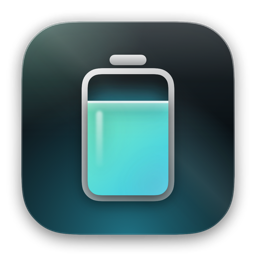
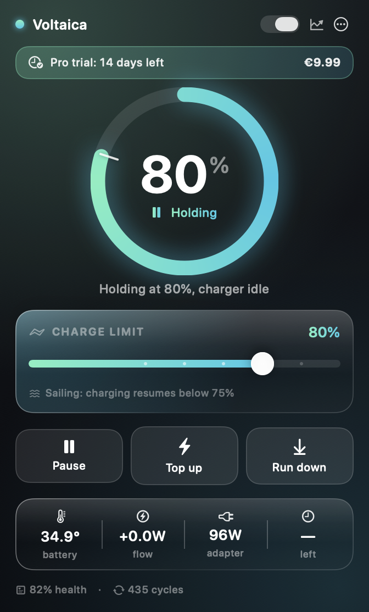
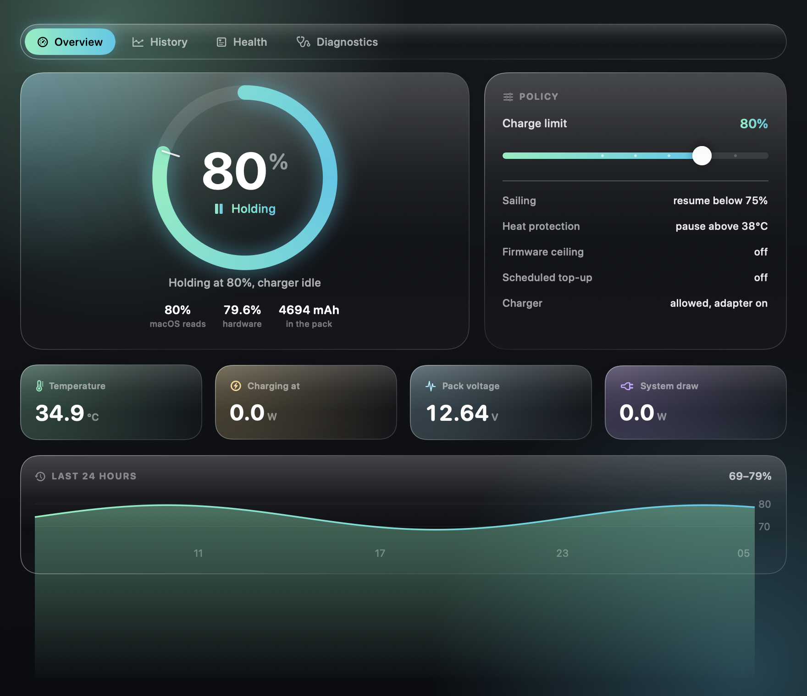

Keep the battery
off 100%.
A charge limit your Mac actually holds, sailing instead of trickle charging, and every number the battery will tell you.
14 days fully unlocked, no account, no subscription · macOS 14+ · Apple silicon and Intel

Why bother
A lithium pack ages fastest when it sits full and warm. A MacBook on a desk sits at 100%, warm, and the charger tops it up every time it drifts a fraction of a percent. Apple's Optimised Charging helps a little, decides for you, and shows you nothing.
Any limit, held
20% to 100%, enforced by a root service, so it survives logout, sleep and a crash of the UI.
Sailing
Once the limit is reached the charger stays off until the charge drifts below it. Far fewer charger cycles than a hard limit.
Heat protection
Pause charging while the pack is hot, which is when charging costs the most life. With a floor, so a flat battery always charges.
Run down
Cut adapter power and walk a full battery back to your limit instead of waiting for it to drain, on the Macs whose firmware allows it.
Scheduled top ups
Be at 100% by 08:00 on the mornings you travel, and only those.
Nothing hidden
Cycle count, design vs nominal capacity, cell voltages, lifetime temperature, and the raw SMC keys behind every number.
The whole battery, on one screen
Charge, temperature and power over time, sampled once a minute by the service, kept for 30 days, stored on your Mac and nowhere else.

Free or paid
Everything that reads and reports is free forever. A license unlocks the parts that make a decision for you.
| Feature | Free | €9.99 |
|---|---|---|
| Monitoring, health, history, diagnostics | ✓ | ✓ |
| Firmware 80% ceiling | ✓ | ✓ |
| Any charge limit from 20% to 100% | — | ✓ |
| Sailing | — | ✓ |
| Heat protection | — | ✓ |
| Run down, top ups, schedules, calibration | — | ✓ |
| Macs per license | — | 3 |
One payment. Not a subscription, not a yearly upgrade fee. The first 14 days are the paid tier, unlocked, with nothing to enter.
Honest about the root service
Holding a charge limit means writing SMC keys, and the SMC only accepts those writes from root. So Voltaica installs one small launchd daemon that does the writing and nothing else: no network access, no shell, no file writes outside its own folder, and it only talks to code signed by the same developer.
It hands the charger back to macOS whenever the policy is off, when it stops, and when you remove it. If anything ever goes wrong:
sudo /Applications/Voltaica.app/Contents/MacOS/voltaicactl resetAnd to prove the whole write path works on your Mac:
/Applications/Voltaica.app/Contents/MacOS/voltaicactl selftestOpen where it counts
The engine, the daemon and the CLI are GPL-3.0-or-later: that is the code that touches your hardware, so it is free software you can audit and reuse. The app itself is source available and paid. Building it yourself is free and always will be.